“Дуже привітний персонал, усе швидко й безпечно.”
— Олена
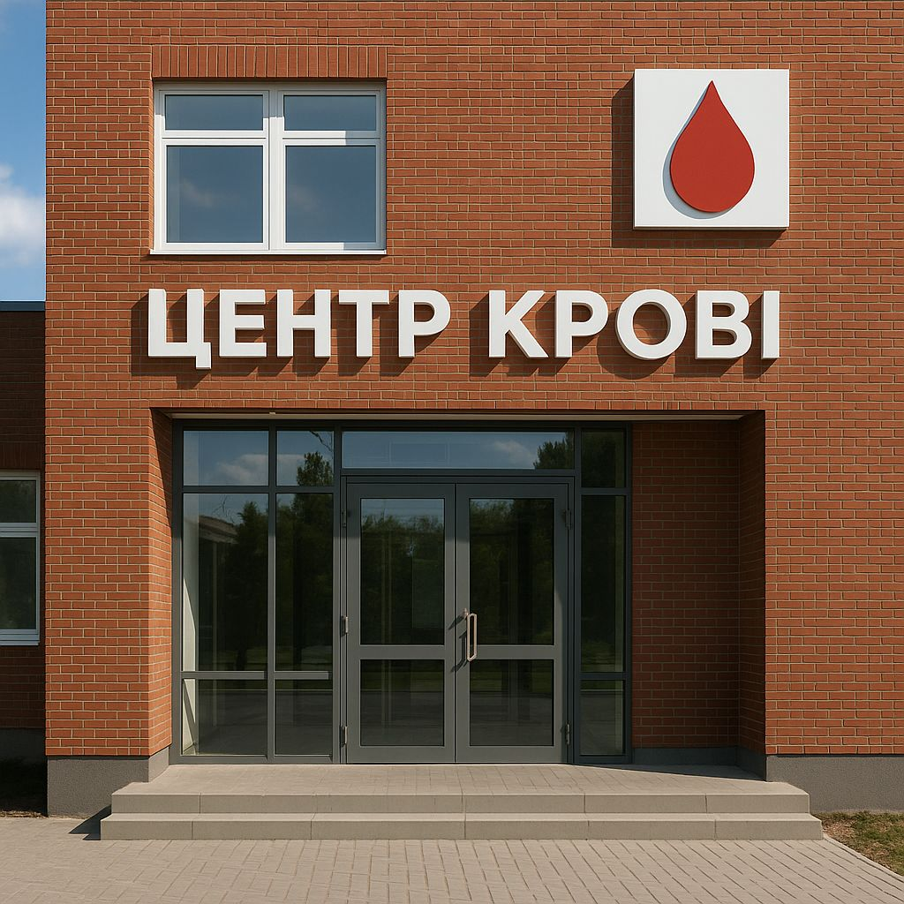
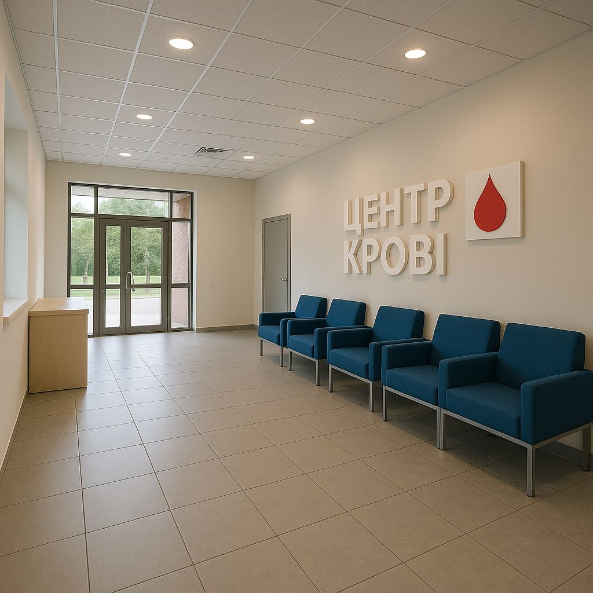
 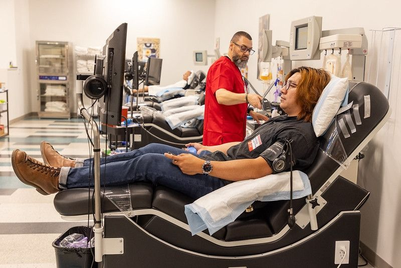
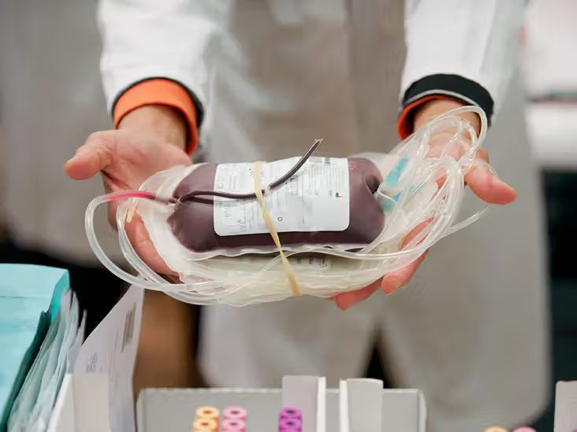
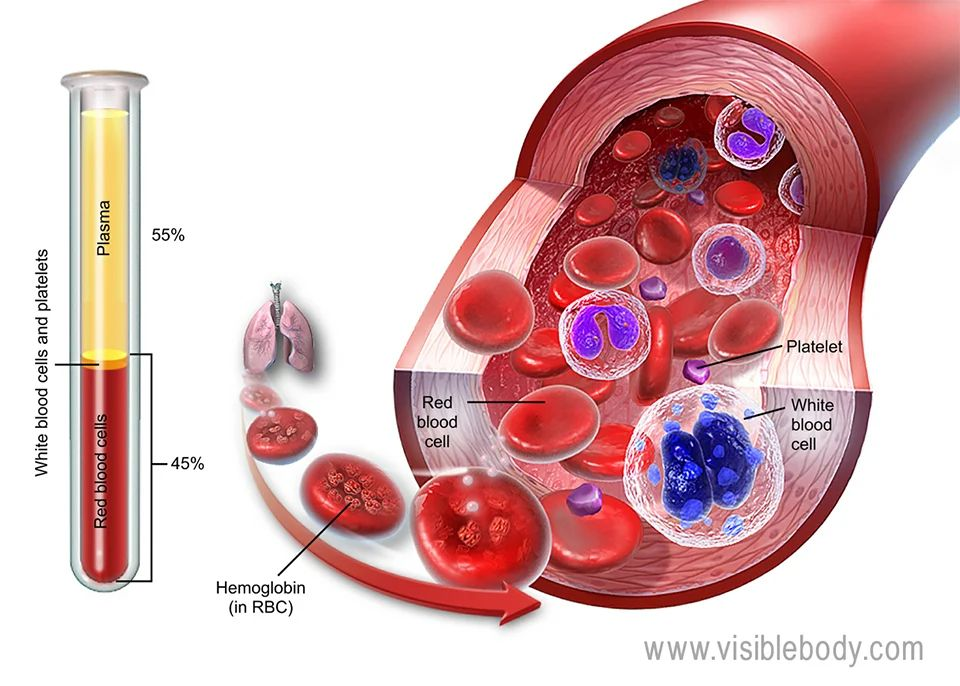
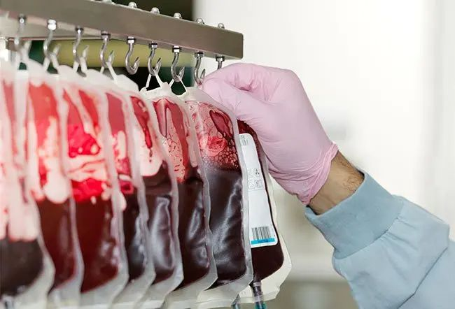
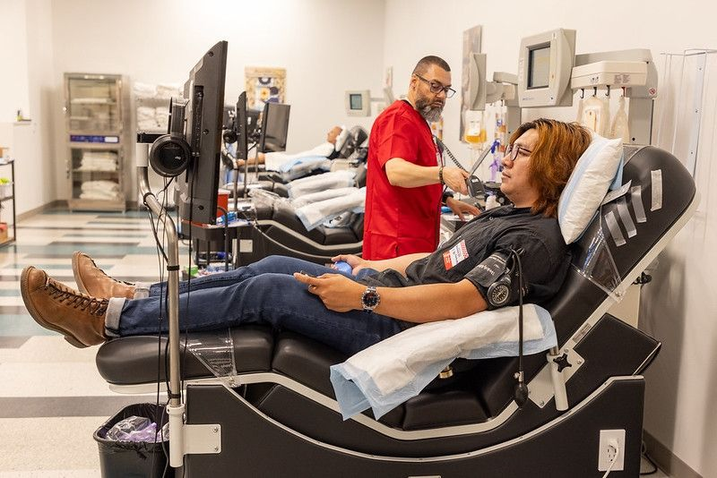
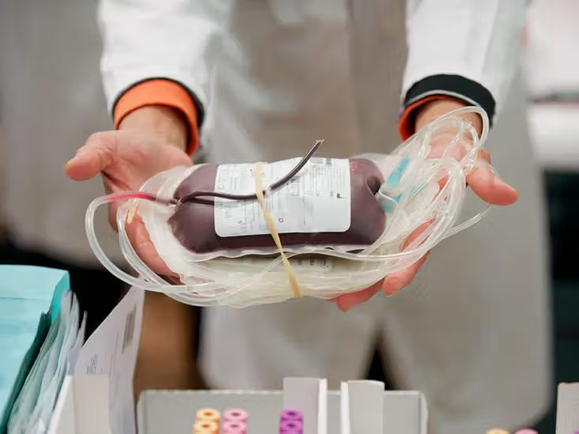
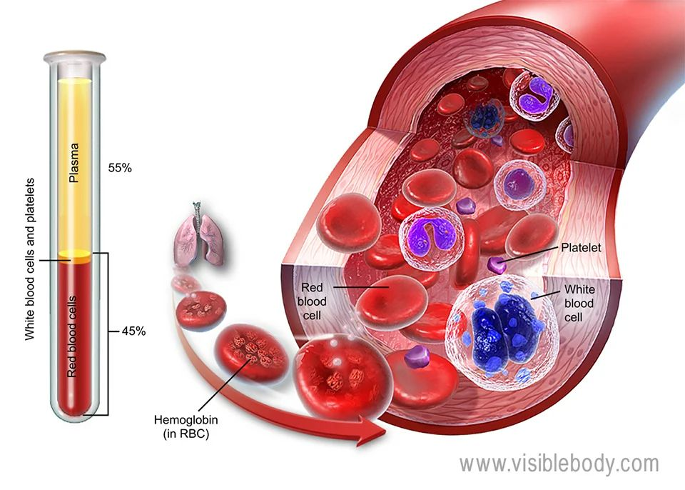
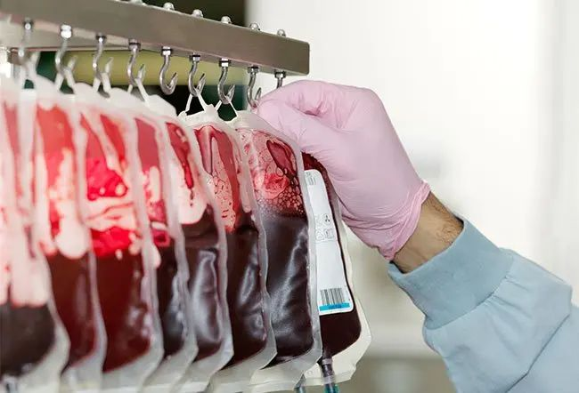
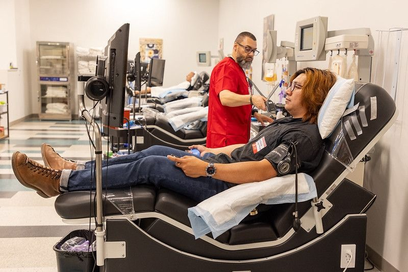
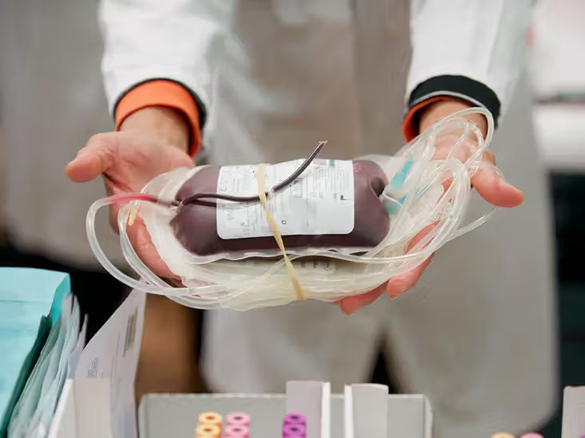
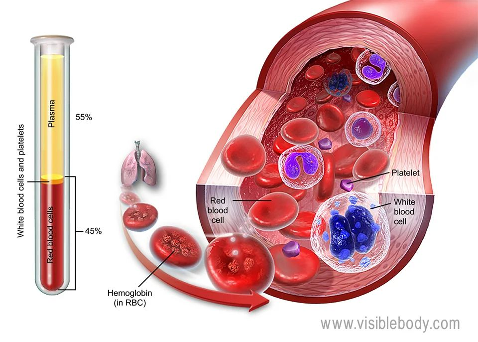
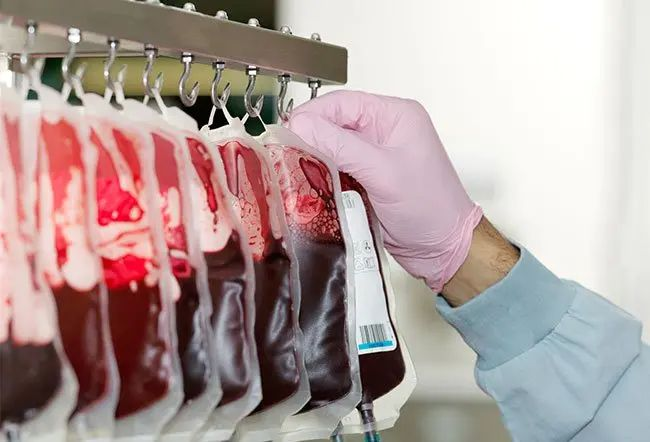
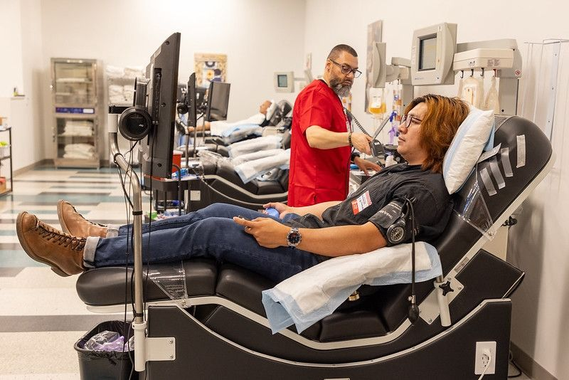
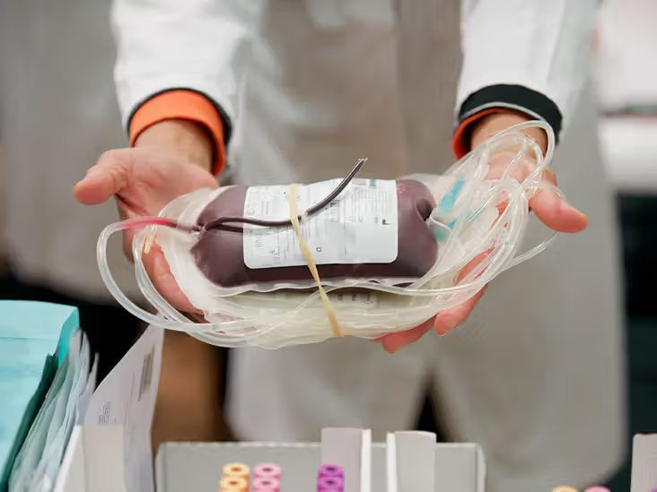
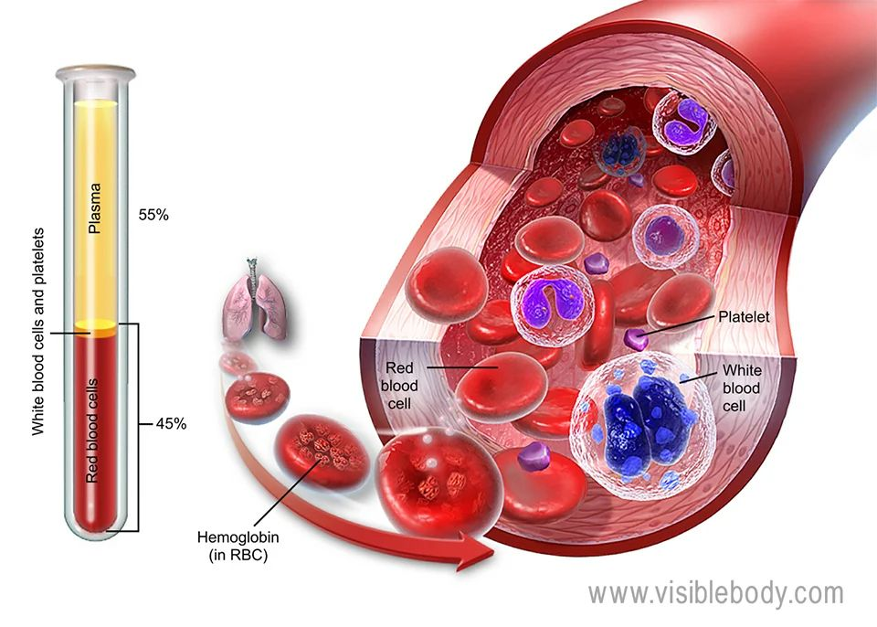
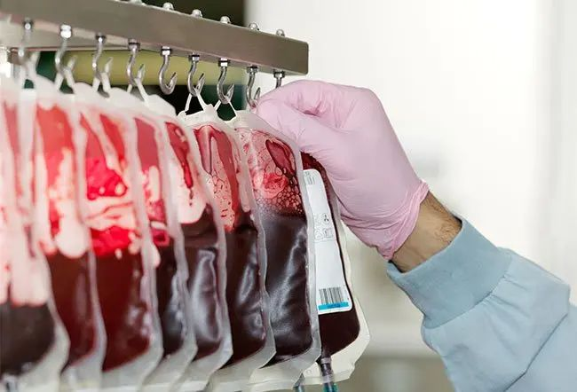
Центр крові був заснований у 1998 році з ініціативи лікаря-гематолога зі Шотландії — доктора Іана МакЛеода (Ian MacLeod).
Працюючи в різних країнах Європи, доктор МакЛеод бачив одну й ту саму проблему: критичну нестачу донорської крові та застарілі підходи до її заготівлі. Його переконання було простим і сильним: донорство має бути безпечним, прозорим і гідним для людини.
Перші роки Центр крові працював у скромних умовах. Невелика команда лікарів і медсестер, ручний облік, мінімальне обладнання — але велика відданість справі. Кров збирали для місцевих лікарень, часто — у складних умовах, інколи буквально рятуючи життя «тут і зараз».
З роками Центр розвивався. З’явилися нові спеціалісти, сучасні методи тестування, чіткі протоколи безпеки та співпраця з медичними установами регіону.
Сьогодні Центр крові — це сучасний медичний простір європейського рівня.
«Людина — в центрі всього.»
Кожна донація тут — це не просто процедура.
Це довіра.
Це відповідальність.
Це життя, яке продовжується.
“Дуже привітний персонал, усе швидко й безпечно.”
— Олена“Вперше здавав кров. Все пояснили, підтримали.”
— Андрій“Зручно записатися, чисто, професійно.”
— Марія“Дуже уважні медики, відчувається досвід.”
— Ірина“Процедура пройшла легко, навіть не хвилювався.”
— Сергій“Все організовано чітко, без черг.”
— Віктор“Приємна атмосфера, не як у лікарні.”
— Наталія“Після донації дали чай і солодке — дрібниця, а приємно.”
— Олексій“Дуже чисто та охайно, викликає довіру.”
— Юлія“Пояснили всі етапи, відповіли на питання.”
— Роман“Відчувається, що тут дбають про донорів.”
— Тетяна“Здав кров без стресу, прийду ще.”
— Денис“Сучасне обладнання та уважний персонал.”
— Катерина“Дуже людське ставлення, дякую команді.”
— Михайло“Радію, що можу допомогти іншим у такому місці.”
— Софія